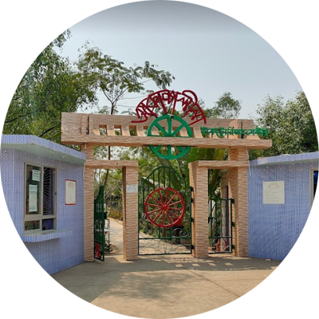
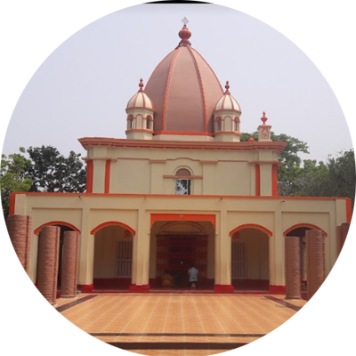

সুন্দরবন হলো বঙ্গোপসাগর উপকূলবর্তী অঞ্চলে অবস্থিত একটি প্রশস্ত বনভূমি যা বিশ্বের প্রাকৃতিক বিস্ময়াবলির অন্যতম।
পদ্মা, মেঘনা ও ব্রহ্মপুত্র নদীত্রয়ের অববাহিকার বদ্বীপ এলাকায় অবস্থিত এই অপরূপ বনভূমি বাংলাদেশের খুলনা, সাতক্ষীরা,
বাগেরহাট, পটুয়াখালী ও বরগুনা জেলা এবং ভারতের পশ্চিমবঙ্গ রাজ্যের দুই জেলা উত্তর চব্বিশ পরগনা ও
দক্ষিণ চব্বিশ পরগনা জুড়ে বিস্তৃত।[২] সমুদ্র উপকূলবর্তী নোনা পরিবেশের সবচেয়ে বড় ম্যানগ্রোভ বন হিসেবে
সুন্দরবন বিশ্বের সর্ববৃহৎ অখণ্ড বনভূমি।[৩] ১০,০০০ বর্গ কিলোমিটার জুড়ে গড়ে ওঠা সুন্দরবনের ৬,০১৭ বর্গ কিলোমিটার (৬২%)
[৪] রয়েছে বাংলাদেশে[৫] এবং বাকি অংশ (৩৮%) রয়েছে ভারতের মধ্যে।
সুন্দরবন ৬ ডিসেম্বর ১৯৯৭ খ্রিস্টাব্দে ইউনেস্কো বিশ্ব ঐতিহ্যবাহী স্থান হিসেবে স্বীকৃতি লাভ করে।
এর বাংলাদেশ ও ভারতীয় অংশ বস্তুত একই নিরবচ্ছিন্ন ভূমিখণ্ডের সন্নিহিত অংশ হলেও ইউনেস্কোর বিশ্ব
ঐতিহ্যের তালিকায় ভিন্ন ভিন্ন নামে সূচিবদ্ধ হয়েছে; যথাক্রমে 'সুন্দরবন' ও 'সুন্দরবন জাতীয় উদ্যান' নামে
এই সুরক্ষা সত্ত্বেও, আইইউসিএন রেড লিস্ট অফ ইকোসিস্টেম ফ্রেমওয়ার্কের অধীনে ২০২০ সালের মূল্যায়নে
ভারতীয় সুন্দরবনকে বিপন্ন বলে মনে করা হয়েছিল।[৭] সুন্দরবনকে জালের মত জড়িয়ে রয়েছে সামুদ্রিক
স্রোতধারা, কাদা চর এবং ম্যানগ্রোভ বনভূমির লবণাক্ততাসহ ক্ষুদ্রায়তন দ্বীপমালা। মোট বনভূমির ৩১.১ শতাংশ,
অর্থাৎ ১,৮৭৪ বর্গকিলোমিটার জুড়ে রয়েছে নদীনালা, খাঁড়ি, বিল মিলিয়ে জলাকীর্ণ অঞ্চল।[৪] বনভূমিটি,
স্বনামে বিখ্যাত রয়েল বেঙ্গল টাইগার ছাড়াও নানান ধরনের পাখি, চিত্রা হরিণ, কুমির ও সাপসহ অসংখ্য
প্রজাতির প্রাণীর আবাসস্থল হিসেবে পরিচিত। জরিপ মোতাবেক ১০৬ বাঘ ও ১০০০০০ থেকে ১৫০০০০ চিত্রা হরিণ রয়েছে
এখন সুন্দরবন এলাকায়। ১৯৯২ সালের ২১ মে সুন্দরবন রামসার স্থান হিসেবে স্বীকৃতি লাভ করে।
সুন্দরবনে প্রতি বছর হাজার হাজার পর্যটক ঘুরতে আসে। প্রতি বছর দেশ-বিদেশের অসংখ্য
পর্যটক সুন্দরবনের অপরূপ সৌন্দর্যে মুগ্ধ হয়ে সুন্দরবন ভ্রমণ করার মাধ্যমে প্রকৃতি থেকে বিভিন্ন জ্ঞান অর্জন করে।
সর্বাধিক প্রচুর গাছের প্রজাতি হল সুন্দরী (Heritiera fomes) এবং গেওয়া (Excoecaria agallocha)।
বনে ২৯০ টি পাখি, ১২০ টি মাছ, ৪২ টি স্তন্যপায়ী, ৩৫ টি সরীসৃপ এবং
আটটি উভচর প্রজাতি সহ ৪৫৩ টি প্রাণী বন্যপ্রাণীর বাসস্থান সরবরাহ করে।[৮]
মাছ এবং কিছু অমেরুদণ্ডী প্রাণী ছাড়া অন্য বন্যপ্রাণী হত্যা বা দখলের উপর
সম্পূর্ণ নিষেধাজ্ঞা থাকা সত্ত্বেও, মনে হচ্ছে বিংশ শতাব্দীতে হ্রাসপ্রাপ্ত জীববৈচিত্র্য বা প্রজাতির ক্ষতির একটি সামঞ্জস্যপূর্ণ
প্যাটার্ন রয়েছে, এবং বনের পরিবেশগত গুণমান হ্রাস পাচ্ছে।[৯] পশ্চিমবঙ্গের সুন্দরবন
জাতীয় উদ্যানের প্রশাসন ও ব্যবস্থাপনার দায়িত্ব বন অধিদপ্তর। বাংলাদেশে ১৯৯৩ সালে বন সংরক্ষণের জন্য
একটি বন চক্র তৈরি করা হয় এবং এরপর থেকে প্রধান বন সংরক্ষক দের নিযুক্ত করা হয়েছে। উভয় সরকারের
কাছ থেকে সংরক্ষণের প্রতিশ্রুতি সত্ত্বেও, সুন্দরবন প্রাকৃতিক এবং মানবসৃষ্ট উভয় কারণে হুমকির মুখে রয়েছে।
২০০৭ সালে ঘূর্ণিঝড় সিডরের ভূমিধ্বসের কারণে প্রায় ৪০% সুন্দরবন ক্ষতিগ্রস্ত হয়। সমুদ্রের জলস্তর বৃদ্ধি এবং
স্বাদুপানির সরবরাহ হ্রাসের কারণে বনটি বর্ধিত সালিনিটিতেও ভুগছে। আবার ২০০৯ সালের মে মাসে ঘূর্ণিঝড়
আইলা ব্যাপক হতাহতের সাথে সুন্দরবনকে বিধ্বস্ত করে। এই ঘূর্ণিঝড়ে কমপক্ষে ১,০০,০০০ মানুষ ক্ষতিগ্রস্ত হয়েছে।[১০][১১]
প্রস্তাবিত কয়লা চালিত রামপাল বিদ্যুৎ কেন্দ্র টি বাংলাদেশের খুলনার
বাঘেরহাট জেলার রামপাল উপজেলায় সুন্দরবন থেকে ১৪ কিলোমিটার (৮.৭ মাইল) উত্তরে অবস্থিত,
ইউনেস্কোর ২০১৬ সালের একটি প্রতিবেদন অনুসারে এই অনন্য ম্যানগ্রোভ অরণ্যের আরও ক্ষতি করবে বলে ধারণা করা হচ্ছে।[১২]
সাতক্ষীরার শ্যামনগর উপজেলার বংশীপুর গ্রামে অবস্থিত ঐতিহাসিক বংশীপুর শাহী মসজিদ মহান আল্লাহ রাব্বুল আলামিনের এক অপূর্ব নেয়ামত। শ্যামনগর উপজেলা হতে প্রায়ই ৫ কিলোমিটার দক্ষিণে বংশীপুর বাসস্ট্যান্ডের উত্তর পাশে অবস্থিত ঐতিহাসিক এ মসজিদ। ইতিহাসে বংশীপুর শাহী মসজিদ টেঙ্গা মসজিদ নামেও পরিচিত। ইট দিয়ে নির্মিত এই মসজিদটি এক সময় ব্যাবহারের উপযোগী ছিলনা কিন্তু বর্তমানে ব্যাপক সংস্কার করে মসজিদটিকে আধুনিক করা হয়েছে। ইতিহাস বিখ্যাত এ মসজিদের দৈর্ঘ্য ৪১.১৫ মিটার এবং এর প্রস্থ ১০.৬৭ মিটার। মসজিদের প্রধান ভবনের উপর চমৎকার ৫টি গম্বুজ রয়েছে এবং চারটি দেয়ালের মাঝে ৪ টি ধনুক আকৃতির নকশা রয়েছে যা মোঘল আমলের স্থাপত্যের নিদর্শন বহন করে। শিলালিপি না থাকায় এই মসজিদের নির্মাণকাল নিয়ে দুই ধরনের মতামত রয়েছে। একটি মত অনুসারে রাজা প্রতাপাদিত্য তার মুসলিম অনুসারীদের জন্য নির্মাণ করেন। অপর মতানুসারে মোঘল সম্রাট আকবরের সেনাপতি মানসিংহ এটি নির্মাণ করেন। নির্মাণ পরিকল্পনার জন্য মসজিদটি দর্শনার্থীদের নিকট প্রশংসিত হয়। একই রেখায় পাঁচটি গম্বুজ থাকায় এই মসজিদটিকে বাংলায় মুসলিম স্থাপত্যের সবচেয়ে প্রাচীন স্থাপত্যগুলোর একটি হিসেবে বিবেচনা করা হয়। দূর থেকে মসজিদটিকে সহজে চেনা যায়। সেজন্য মসজিদ কমিটির উদ্যোগে সুউচ্চ মিনার তৈরি করা হয়। বর্তমানে মসজিদটিতে আধুনিকতার ছোঁয়া লেগেছে।
শ্যামনগরের সুন্দরবনের কোলে ‘আকাশনীলা ইকো ট্যুরিজম’ শ্যামনগর উপজেলা প্রশাসনের উদ্যোগেই নির্মিত হচ্ছে ‘আকাশনীলা ইকো ট্যুরিজম’। ইকো ট্যুরিজমে সুন্দরবন দর্শনে আগতদের অভ্যর্থনা জানাতে পারবে। পশ্চিম সুন্দরবনের প্রবেশদ্বার মুন্সিগঞ্জে গড়ে ওঠা এ ‘মিনি পার্ক’ আতিথেয়তা দিবে দেশী বিদেশী পর্যটকদের। ভ্রমন পিপাসুদের জন্য যাবতীয় আধুনিক সুযোগ-সুবিধা বজায় রেখে প্রাথমিক পর্যায়ে প্রায় সতের একর জমি নিয়ে ‘ট্যুরিজম সেন্টারটি’ যাত্রা শুরু করছে। পশ্চিম সুন্দরবনকে লোকালয় থেকে বিভক্ত করা মালঞ্চ নদীর চরে গড়ে ওঠা ‘আকাশ নীলা ইকো ট্যুরিজম’ নামীয় প্রাকৃতিক সৌন্দর্য্য মন্ডিত আধুনিকতায় ছোঁয়ায় ভরপুর এ ‘ট্যুরিজম সেন্টার’। কলবাড়ী বিজ্র সংলগ্ন “আকাশ নীলা ইকো ট্যুরিজম” সেন্টারের দু’পাশ ও মধ্যভাগ দিয়ে এমন তিনটি ট্রেইল সরাসরি মালঞ্চ নদীতে যেয়ে মিশেছে। চারিদিকে লবন পানির সমারোহ সত্ত্বেও নদীর চরে গড়ে ওঠা ঐ ‘ট্যুরিজম সেন্টারে’র মধ্যভাগে মিষ্টি পানির উৎস হিসেবে পুকুর খনন করা হয়েছে। কেওড়াসহ সুন্দরবনের নানা উদ্ভিদে ভরপুর এ পার্কে অতিথিদের জন্য ‘কটেজ’ সুবিধার পাশাপাশি আধুনিক মানের রেষ্টুরেন্ট গড়ে তোলা হচ্ছে। নীচে লবন পানিতে ঢেকে থাকা চরের উপর নিরাপদ দুরত্বে বাঁশের তৈরী মাঁচা নির্মান করে সেখানে পর্যটকদের জন্য বসার ব্যবস্থা করা হয়েছে। “আকাশ নীলা ইকো ট্যুরিজম” সেন্টার থেকে বিকালে সুর্যাস্ত দৃশ্য অবলোকন করলে নিজেকে সুন্দরবনের গভীরে আবিস্কার করবে পর্যটকরা। সুন্দরবনের কোলের মধ্যে গড়ে তোলা ‘ট্যুরিজম সেন্টার’ এ প্রবেশ করলেই সুন্দরবনের ছোঁয়া উপলব্ধি করা যাবে। প্রাকৃতিক সৌন্দর্য্য উপভোগের পাশাপাশি কৃত্রিমভাবে উপায়ে সংরক্ষিত সুন্দরবনের সকল প্রজাতির মাছের সাথে পর্যটকদের পরিচয় ঘটাবে ‘ফিশিং মিউজিয়াম’। এছাড়া ‘ট্যুরিজম সেন্টার’র ‘ওয়াচ টাওয়ার’ থেকে সুন্দরবনের ভিতরকার পরিবেশ অবলোকন করার সুযোগও রাখা হয়েছে কর্মপরিকল্পনায়। সুত্র মতে ‘ইনোভেশন ইন পাবলিক সার্ভিস’ এর আওতায় কমিউনিটি বেজড কালচারাল ইকো ট্যুরিজম প্রকল্পের আওতায় শ্যামনগর উপজেলা প্রশাসন ২০১৫ সালে “আকাশ নীলা ইকো ট্যুরিজম” সেন্টারটি গড়ে তোলার উদ্যোগ গ্রহন করে। তৎকালীন সাতক্ষীরা জেলা প্রশাসক নাজমুল আহসান পৃষ্ঠপোষকতায় শ্যামনগর উপজেলা নির্বাহী অফিসার আবু সায়েদ মোঃ মনজুর আলম এর কর্মপরিকল্পনায় ঐ বছর থেকে ‘ট্যুরিজম সেন্টার’টির কাজ শুরু হয়। উপজেলা সহকারী কমিশনার (ভূমি) মোঃ আহসান উল্লাহ শরিফী কাজটি কয়েকবার পরিদর্শন করেছেন। ২০১৫ সালের ২০ মে জেলা প্রশাসক “আকাশ নীলা ইকো ট্যুরিজম” সেন্টারের ‘ট্রেইল’ নির্মান কাজের উদ্বোধন করে। দুুই বছরেরও কম সময়ের মধ্যে ‘ট্যুরিজম সেন্টার’র কাজ অনেকদুর এগিয়েছে। ইতিমধ্যে উপজেলা প্রশাসনের পক্ষ থেকে যুব উন্নয়ন থেকে প্রশিক্ষন গ্রহনকারী তিন বেকার যুবককে “আকাশ নীলা ইকো ট্যুরিজম” সেন্টার দেখাশুনার কাজে নিযুক্ত করা হয়েছে। এই ‘ট্যুরিজম সেন্টার’ থেকেই পর্যটকরা নৌ-পথে সুন্দরবনে যাতায়াতের সুযোগ পাবে এবং প্রাকৃতিকভাবে গড়ে তোলা ‘ট্যুরিজম সেন্টার এ অবকাশ যাপনের সুযোগ রাখা হচ্ছে। সুন্দরবন থেকে মাত্র কয়েকশ গজ দুরত্বের এ ‘ট্যুরিজম সেন্টার’ ভ্রমন পিপাসুদের তৃপ্তি মেটানোর পাশাপাশি এলাকার মানুষের জীবনমান ও আর্থ-সামাজিক উন্নয়নে অবদান রাখবে বলেও প্রত্যাশা সংশ্লিষ্টদের।
সাতক্ষীরা শহর থেকে ৭২ কিলোমিটার দূরে শ্যামনগর উপজেলার নকিপুরে অবস্থিত এটি। প্রায় দেড়শ বছর আগে ১৮৮৮ সালে হরিচরণ রায় চৌধুরী ৪১ কক্ষের তিনতলা এল-প্যার্টানের এ বাড়িটি নির্মাণ করেন। স্থানীয়দের কাছে এটি রায় চৌধুরীর বাড়ি ও নকিপুর জমিদার বাড়ি নামে পরিচিত। হরিচরণ রায় এলাকার প্রতাপশালী জমিদার ছিলেন। তার এ বাড়িতে প্রতিবছর দুর্গাপূজা হতো। পুজোর জন্য বাড়িতে পাকা প্যান্ডেল ছিল। বাড়িটিতে আছে জোড়া শিবমন্দির, চিকিৎসালয়, নহবতখানা, পূজামণ্ডপ, দিঘী ও পুকুর। গাড়ি থেকে নেমে বাড়িটির বিশালতা প্রথমে আমরা কেউ বুঝতে পারিনি। ছোট ছোট বটগাছ আর লতাপাতা বাড়ির নিজস্বতা নষ্ট করেছে। সময় আর সুযোগের সঙ্গে গাছগুলোও এটির গায়ে মাথা উঁচু করে দাঁড়িয়ে গেছে। দূর থেকে শুধু তার ধ্বংসাবশেষ দেখা যায়। এক পা দুই পা করে বাড়িটার কাছে গেলাম। খুঁটে খুঁটে সবকিছু দেখতে শুরু করলাম, যতই দেখেছি অবাক হয়েছি। আভিজাত্য আর গাম্ভীর্যে ভরপুর প্রতিটা ইট, প্রতিটা কক্ষ। জানালা আর দরজার খোপগুলো অসাধারণ কারুকার্যের চাদরে মোড়ানো। সেগুলো দেখে আমার গায়ের ভেতর শিরশির করে ওঠলো। ভাবতে শুরু করলাম, প্রতিটা জায়গা একদিন কতই না কোলাহল, বিলাসিতা আর আড়ম্বরপূর্ণ থাকতো। কিন্তু সব আড়ম্বর আর নৈপুণ্য আজ কালের গহ্বরে তলিয়ে যাওয়ার দিন গুণছে! চোখের খোরাক মেটাতে যখন সবাই ধ্বংসাবশেষ বাড়িটা বিচক্ষণতার সঙ্গে দেখছি এবং ছবি তুলছি, ঠিক তখন নিস্তব্ধতা ভেঙ্গে আমাদেরই একজন তৎকালীন খরচের সঙ্গে এটির বর্তমান বাজার মূল্য নিয়ে কথা বলে ওঠলো। সবাই একযোগে হেসে উঠলাম, এটা নিয়ে নিজেরা কিছুসময় দর-কষাকষি আর বাক-বিতণ্ডা করলাম। এক ভাইয়ের কৌতুহলের বশবর্তী হয়ে বাড়িটার চারপাশে ঘুরলাম, যদি একটা সোনার মোহর পাই এ আশায়। সোনার মোহর না পেলেও দর্শনার্থীদের ফেলে যাওয়া কিছু জিনিস ঠিকই পেয়েছি। অন্য দর্শনার্থীরা হয়ত আমাদের মতো সোনার মোহর খুঁজেছিলো, এটা বুঝতে বাকি থাকলো না। ইট, চুন আর সুরকি মিশ্রিত বাড়িটি চোখের সঙ্গে মনের ক্ষুধা মিটিয়েছে। প্রতিটা ইটের পরতে পরতে রাজকীয়তার সুঘ্রাণ এখনও বিদ্যমান। কিছু পা হেঁটে দেখা পেলাম এক বিশাল পুকুরের। চারপাশে অসংখ্য গাছ আর আগাছা দিয়ে পুকুরের বাধগুলো আবৃত হয়ে গেছে। ঝিঁঝি পোকার ডাকে পরিবেশটা মুখরিত। পুকুরে নামার জন্য তৈরি করা ইট দিয়ে বাঁধানো ঘাট আমার নজর এড়াতে পারেনি। ঘাটটি দেখে মনে হলো, ললিতকলার আবেগমিশ্রিত শিল্পীর রং তুলির আঁচড়ে আঁকা ছবি। এসব দেখে ভাবতে ভাবতে সূর্য যে পশ্চিম আকাশে হেলে পড়েছে তা বুঝতে পারিনি, সেটা জানান দিতে হঠাৎ গাড়ির হর্ন বেজে ওঠলো। বুঝতে পারলাম সময় শেষ। তারপর ঘোরাঘুরি শেষে আমরা বাড়ির উদ্দেশ্যে রওনা হলাম। অপরিচর্যা ও অবহেলার কারণে হরিচরণ রায়ের জমিদার বাড়ির ভবন ও শিবমন্দির সবকিছুই ধ্বংসের মুখে। ইট, সুরকি খসে পড়ার পাশাপাশি বিভিন্ন ধরনের গাছগাছালি ও লতাপাতা ভবনগুলোকে ঘিরে ধরেছে। ঐতিহ্যবাহী এ বাড়িটি স্থানীয় মানুষদের দেখাশোনার পাশাপাশি সরকারের দৃষ্টিপাত জরুরি।
সাতক্ষীরা জেলার শ্যামনগর উপজেলার ঈশ্বরীপুর গ্রামে অবস্থিত যশোরেশ্বরী কালী মন্দির (Shaktipeeth Shri Jeshoreshwari Kali Temple) হিন্দু ধর্মাবলম্বীদের একটি পবিত্র তীর্থস্থান। যশোরেশ্বরী শব্দের অর্থ যশোরের দেবী। সত্য যুগে দক্ষ যজ্ঞের পর সতী মাতা দেহ ত্যাগের পর মহাদেব মৃত দেহ কাঁধে নিয়ে প্রলয় নৃত্য শুরু করেন। বিষ্ণু দেব তাঁর সুদর্শন চক্র কতৃক সতীর দেহ ছেদন করেন। এতে সতী মাতার দেহ খণ্ড গুলো ভারতীয় উপমহাদেশের বিভিন্ন স্থানে ছড়িয়ে পড়ে। সতী মাতার দেহ খণ্ড যে সকল স্থানে পতিত হয়েছে সেসব স্থানকে শক্তিপীঠ হিসেবে আখ্যায়িত করা হয়। যশোরেশ্বরী কালী মন্দির তেমনি একটি শক্তিপীঠ। ধারণা করা হয়, আনারি নামের এক ব্রাহ্মণ যশোরেশ্বরী কালী মন্দির এবং শক্তিপীঠের ১০০টি দরজা নির্মাণ করেন। যদিও মন্দিরের নির্মাণকাল সম্পর্কে নিশ্চিত কোন তথ্য পাওয়া যায় যায়নি। পরবর্তীতে লক্ষ্মণ সেন ও মহারাজা প্রতাপাদিত্য যশোরেশ্বরী কালী মন্দির সংস্কার করেন। ত্রয়োদশ শতাব্দীতে লক্ষ্মণ সেন মন্দির সংস্কারের পাশাপাশি মূল মন্দিরের কাছে নাটমন্দির নামে একটি বৃহৎ মঞ্চমণ্ডপ নির্মাণ করেন আর মহারাজা প্রতাপাদিত্য তৈরী করেন কালী মন্দির।
